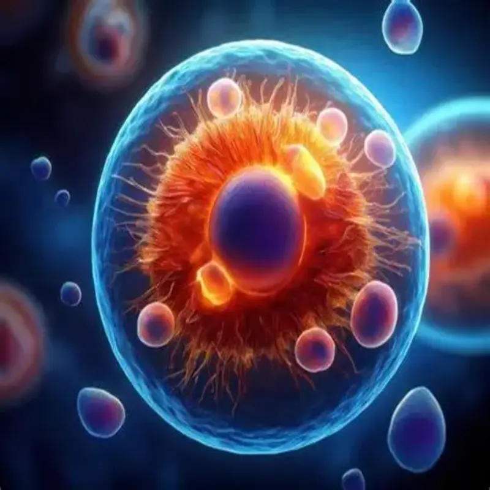

Contenido: diferencia entre organismos unicelulares y pluricelulares.
Enfoque: las estructuras y funciones básicas que componen a cada celula.
La progresión 1: “La unidad de la vida” de la materia Organismos: estructura y procesos. Herencia y evolución biológica aborda el estudio de las características fundamentales que comparten todos los seres vivos. A través de este tema se explica que, a pesar de la gran diversidad de organismos que existen en la naturaleza, todos presentan una organización común basada en la célula, considerada la unidad básica de la vida.
Asimismo, se analizan las funciones vitales que permiten a los organismos mantenerse con vida, tales como la nutrición, la relación con el entorno y la reproducción. Otro aspecto importante que se estudia es la presencia de información genética, la cual se transmite de una generación a otra y permite la continuidad de la vida.
En conjunto, esta progresión busca comprender cómo los seres vivos, aun siendo distintos entre sí, comparten principios biológicos comunes que evidencian un origen y funcionamiento similares dentro de la diversidad de la vida.